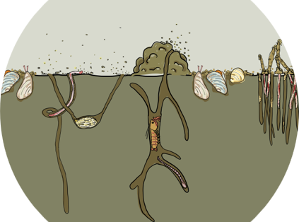

Btrait.RdTrait-based analyses of macrofauna data.

The package: Soetaert K, Beauchard O (2023). Btrait: Working with Biological density, taxonomy, and trait composition data. R package version x.x.x. Data product created under the European Marine Observation Data Network (EMODnet) Biology Phase IV.
For trait databases:
Beauchard O, Brind Amour A, Schratzberger M, Laffargue P, Hintzen NT, Somerfield PJ, Piet G (2021) A generic approach to develop a trait-based indicator of trawling-induced disturbance. Mar Ecol Prog Ser 675:35-52. https://doi.org/10.3354/meps13840
Beauchard, O., Murray S.A. Thompson, Kari Elsa Ellingsen, Gerjan Piet, Pascal Laffargue, Karline Soetaert, 2023. Assessing sea floor functional diversity and vulnerability. Marine Ecology Progress Serie v708, p21-43, https://www.int-res.com/abstracts/meps/v708/p21-43/
For density data sets:
Heip, C.H.R.; Basford, D.; Craeymeersch, J.A.; Dewarumez, J.-M.; Dorjes, J.; de Wilde, P.; Duineveld, G.; Eleftheriou, A.; Herman, P.M.J.; Kingston, K.; Niermann, U.; Kunitzer, A.; Rachor, E.; Rumohr, H.; Soetaert, K.; Soltwedel, T. (1992). Trends in biomass, density and diversity of North Sea macrofauna. ICES J. Mar. Sci./J. Cons. int. Explor. Mer 49: 13-22
L. Leewis, E.C. Verduin, R. Stolk ; Eurofins AquaSense Macrozoobenthosonderzoek in de Rijkswateren met boxcorer, jaarrapportage MWTL 2015 : waterlichaam: Noordzee. ublicatiedatum: 31-03-201775 p. Projectnummer Eurofins AquaSense: J00002105. Revisie 2, In opdracht van Ministerie van Infrastructuur en Milieu, Rijkswaterstaat Centrale Informatievoorziening (RWS, CIV)